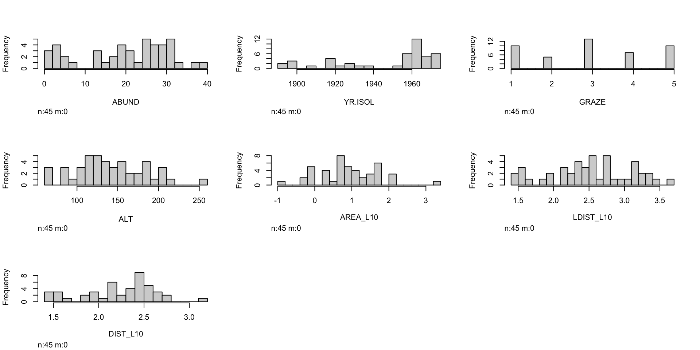
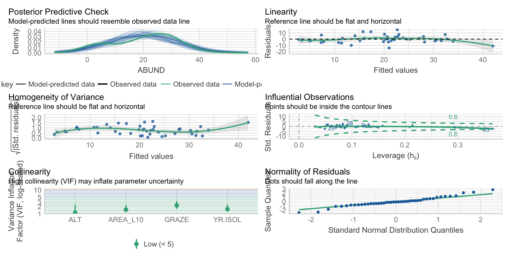

Regression: predictive modelling – Part 2
ENVX2001 - Applied Statistical Methods
School of Life and Envoronmental Sciences
The University of Sydney
Apr 2023
Recap
Model validation workflow
- Split the data into training and test sets (not necessary for cross-validation techniques)
- Develop model(s) on the training set (includes variable selection).
- Validate the model(s) by comparing to the test set:
- RMSE - root mean squared error: a measure of accuracy.
- The lower, the better
- ME - mean error: a measure of bias.
- The closer to 0, the better
- CCC - concordance correlation coefficient: a measure of agreement/precision.
- The closer to 1, the better
- RMSE - root mean squared error: a measure of accuracy.
Example: Lyon dataset
About
Data on the relationship between bird abundance (bird ha-1) and the characteristics of forest patches at 56 locations in SE Victoria.
The predictor variables are:
ALTAltitude (m)YR.ISOLYear when the patch was isolated (years)GRAZEGrazing (coded 1-5 which is light to heavy)AREAPatch area (ha)DISTDistance to nearest patch (km)LDISTDistance to largest patch (km)
Dataset splitting
We will split the data into training and test sets.
Note
Sometimes, the training and tests sets are also called the calibration and validation sets, respectively.
As the dataset is quite small, we will use a 80:20 split.
Checking the split
Have a quick glimpse() of the data to see if the split worked. If your data does not look the same as below, you may have forgotten to set the seed.
Rows: 45
Columns: 7
$ ABUND <dbl> 5.3, 2.0, 1.5, 17.1, 13.8, 2.2, 3.3, 3.0, 27.6, 1.8, 21.2, 3.5…
$ AREA <dbl> 0.1, 0.5, 0.5, 1.0, 1.0, 1.0, 1.0, 1.0, 2.0, 2.0, 2.0, 2.0, 3.…
$ YR.ISOL <dbl> 1968, 1920, 1900, 1966, 1918, 1920, 1965, 1900, 1926, 1890, 19…
$ DIST <dbl> 39, 234, 104, 66, 246, 284, 156, 311, 66, 93, 39, 130, 26, 40,…
$ LDIST <dbl> 39, 234, 311, 66, 246, 1829, 156, 571, 332, 93, 39, 623, 26, 4…
$ GRAZE <dbl> 2, 5, 5, 3, 5, 5, 4, 5, 3, 5, 2, 5, 3, 3, 2, 2, 5, 3, 1, 3, 3,…
$ ALT <dbl> 160, 60, 140, 160, 140, 60, 130, 130, 210, 160, 210, 145, 110,…Rows: 11
Columns: 7
$ ABUND <dbl> 16.6, 14.1, 29.5, 11.5, 3.8, 26.0, 28.3, 34.4, 2.9, 8.0, 14.6
$ AREA <dbl> 13, 1, 973, 17, 1, 18, 34, 96, 3, 2, 2
$ YR.ISOL <dbl> 1968, 1965, 1970, 1920, 1955, 1966, 1965, 1976, 1965, 1900, 19…
$ DIST <dbl> 146, 234, 337, 389, 467, 40, 66, 39, 26, 259, 402
$ LDIST <dbl> 146, 285, 1323, 2595, 467, 3188, 345, 519, 26, 259, 402
$ GRAZE <dbl> 2, 3, 1, 5, 5, 2, 1, 2, 3, 5, 1
$ ALT <dbl> 190, 130, 190, 100, 90, 190, 110, 175, 140, 120, 210Model development
From now on, we will work with the training set only.
Explore
- The next step is to visualise the data.
- Expore relationships between the predictors and the response.
- Histograms
- Correlation plots
- Boxplots
In this lecture we will just look at histograms.
Boxplots

- Looks like
AREALDISTandDISTare skewed – we will transform them so that they are more normally distributed.
Transforming predictors
We will use log10() to transform the predictors. The mutate() function from the dplyr package is useful for this as it can create new columns in the data frame with the transformed values.
Then, remove the untransformed variables from the dataset. Here we can use the select() function from the dplyr package to “delselect” columns by using the - sign.
Rows: 56
Columns: 7
$ ABUND <dbl> 5.3, 2.0, 1.5, 17.1, 13.8, 14.1, 3.8, 2.2, 3.3, 3.0, 27.6, 1.8…
$ AREA <dbl> 0.1, 0.5, 0.5, 1.0, 1.0, 1.0, 1.0, 1.0, 1.0, 1.0, 2.0, 2.0, 2.…
$ YR.ISOL <dbl> 1968, 1920, 1900, 1966, 1918, 1965, 1955, 1920, 1965, 1900, 19…
$ DIST <dbl> 39, 234, 104, 66, 246, 234, 467, 284, 156, 311, 66, 93, 39, 40…
$ LDIST <dbl> 39, 234, 311, 66, 246, 285, 467, 1829, 156, 571, 332, 93, 39, …
$ GRAZE <dbl> 2, 5, 5, 3, 5, 3, 5, 5, 4, 5, 3, 5, 2, 1, 5, 5, 3, 3, 3, 2, 2,…
$ ALT <dbl> 160, 60, 140, 160, 140, 130, 90, 60, 130, 130, 210, 160, 210, …Final inspection
View the histograms again to check that the transformation worked.
Full model
We start with a full model that includes all the predictors.
Call:
lm(formula = ABUND ~ ., data = loyn_train)
Residuals:
Min 1Q Median 3Q Max
-13.9733 -2.7025 -0.4242 2.9837 14.9013
Coefficients:
Estimate Std. Error t value Pr(>|t|)
(Intercept) -157.27354 95.31911 -1.650 0.1072
YR.ISOL 0.09135 0.04697 1.945 0.0592 .
GRAZE -1.68453 0.98383 -1.712 0.0950 .
ALT 0.02134 0.02591 0.824 0.4153
AREA_L10 7.78699 1.66561 4.675 3.64e-05 ***
LDIST_L10 -1.28772 2.57616 -0.500 0.6201
DIST_L10 -1.09693 3.52044 -0.312 0.7571
---
Signif. codes: 0 '***' 0.001 '**' 0.01 '*' 0.05 '.' 0.1 ' ' 1
Residual standard error: 6.154 on 38 degrees of freedom
Multiple R-squared: 0.7179, Adjusted R-squared: 0.6734
F-statistic: 16.12 on 6 and 38 DF, p-value: 4.065e-09Assumptions - Round 1
As usual, we should check the assumptions of the model. We will use the check_model() function from the perfomance package as it also has VIF plots, which we will use.
- Overall, all the assumptions are met. VIFs are all < 10, so no multicollinearity.
Variable selection
Backwards stepwise selection
Use the step() function perform backwards stepwise selection. This function uses AIC to select the best model.
Note
Depending on the dataset splitting, the best model may be different each time we randomly sample the data. In this case we should all have the same results as we set the seed.
Start: AIC=169.93
ABUND ~ YR.ISOL + GRAZE + ALT + AREA_L10 + LDIST_L10 + DIST_L10
Df Sum of Sq RSS AIC
- DIST_L10 1 3.68 1442.9 168.05
- LDIST_L10 1 9.46 1448.7 168.23
- ALT 1 25.69 1464.9 168.73
<none> 1439.2 169.93
- GRAZE 1 111.04 1550.3 171.28
- YR.ISOL 1 143.28 1582.5 172.21
- AREA_L10 1 827.82 2267.0 188.38
Step: AIC=168.05
ABUND ~ YR.ISOL + GRAZE + ALT + AREA_L10 + LDIST_L10
Df Sum of Sq RSS AIC
- LDIST_L10 1 26.29 1469.2 166.86
- ALT 1 29.21 1472.1 166.95
<none> 1442.9 168.05
- GRAZE 1 107.40 1550.3 169.28
- YR.ISOL 1 141.10 1584.0 170.25
- AREA_L10 1 830.44 2273.3 186.50
Step: AIC=166.86
ABUND ~ YR.ISOL + GRAZE + ALT + AREA_L10
Df Sum of Sq RSS AIC
<none> 1469.2 166.86
- ALT 1 83.33 1552.5 167.34
- GRAZE 1 102.47 1571.7 167.90
- YR.ISOL 1 194.22 1663.4 170.45
- AREA_L10 1 912.49 2381.7 186.60- If we compare to the full model, the adjusted r-squared is slightly higher, and the AIC is lower.
The selected model
Call:
lm(formula = ABUND ~ YR.ISOL + GRAZE + ALT + AREA_L10, data = loyn_train)
Residuals:
Min 1Q Median 3Q Max
-14.2061 -3.0215 -0.3244 3.0660 15.0306
Coefficients:
Estimate Std. Error t value Pr(>|t|)
(Intercept) -184.46829 88.14723 -2.093 0.0428 *
YR.ISOL 0.10171 0.04423 2.300 0.0268 *
GRAZE -1.58351 0.94804 -1.670 0.1027
ALT 0.03307 0.02195 1.506 0.1399
AREA_L10 7.03251 1.41093 4.984 1.24e-05 ***
---
Signif. codes: 0 '***' 0.001 '**' 0.01 '*' 0.05 '.' 0.1 ' ' 1
Residual standard error: 6.06 on 40 degrees of freedom
Multiple R-squared: 0.712, Adjusted R-squared: 0.6832
F-statistic: 24.73 on 4 and 40 DF, p-value: 2.345e-10Assumptions - Round 2
Model validation
It looks like the model is good, so let’s bring in the test set to see how it performs!
Assess prediction quality
- RMSE: root mean squared error
RMSE = \frac{1}{n} \sum_{i=1}^{n} (y_i - \hat{y}_i)^2
- ME: mean error - also commonly called bias
ME = \frac{1}{n} \sum_{i=1}^{n} (y_i - \hat{y}_i)
- CCC: Lin’s concordance correlation coefficient
- We will also look at correlations (so as to compare with CCC)
- All of these have been implemented as functions in various packages, so we can also use those.
Performing the tests
The following functions are available:
RMSE()from thecaretpackage:RMSE(y, y_hat)epi.ccc()from theepiRpackage:epi.ccc(y, y_hat)cor()from base R:cor(y, y_hat)
We need to use calculations for:
- ME:
mean(y - y_hat)
Recall:
- full model:
full_fit - stepwise model:
step_fit - test data:
loyn_test
Prepare the test data
Since the test data has not been transformed, we need to do that first.
Perform tests (1)
RMSE - lower is better
[1] 5.713894[1] 7.533522RMSE is larger in the test set because the model was not trained on that data. Looks like the model is overfitting.
ME - lower is better
[1] -2.210577e-15[1] -5.060847ME is smaller in the training set because of the larger sample size.
Perform tests (2)
Correlation - higher is better
[1] 0.8438162[1] 0.848897Correlation is similar in both sets.
CCC - higher is better
est lower upper
1 0.8317932 0.7206952 0.9012367 est lower upper
1 0.7544691 0.3881975 0.9149043CCC is higher in training set, indicating that the model is overfitting.
Conclusions
Code
# put all data into a tible and kable it
tibble(
Dataset = c("Training", "Test"),
RMSE = c(RMSE(loyn_train$ABUND, predict(step_fit)),
RMSE(loyn_test$ABUND, predict(step_fit, newdata = loyn_test))),
ME = c(mean(loyn_train$ABUND - predict(step_fit)),
mean(loyn_test$ABUND - predict(step_fit, newdata = loyn_test))),
COR = c(cor(loyn_train$ABUND, predict(step_fit)),
cor(loyn_test$ABUND, predict(step_fit, newdata = loyn_test))),
CCC = c(epi.ccc(loyn_train$ABUND, predict(step_fit))$rho.c[[1]],
epi.ccc(loyn_test$ABUND, predict(step_fit, newdata = loyn_test))$rho.c[[1]])
) %>%
knitr::kable()| Dataset | RMSE | ME | COR | CCC |
|---|---|---|---|---|
| Training | 5.713894 | 0.000000 | 0.8438162 | 0.8317932 |
| Test | 7.533522 | -5.060847 | 0.8488970 | 0.7544691 |
- The model is overfitting, but not too badly (differences are small enough between training and test sets)
- Large difference in ME is expected, as the training set is much larger than the test set (so the mean is more stable)
- Overfitting indicates that model is still too complex: we should try to simplify it further.
- This could be due to the small sample size, or the fact that we have too many predictors, or the
set.seed()function causing the model(s) to be different each time.
Thanks!
Questions? Comments?
Slides made with Quarto